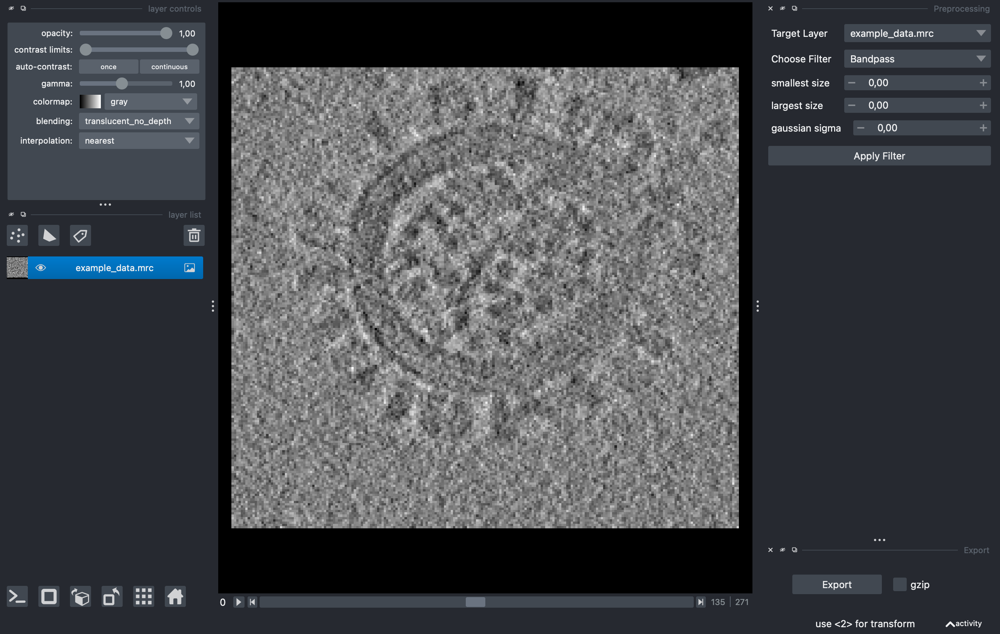
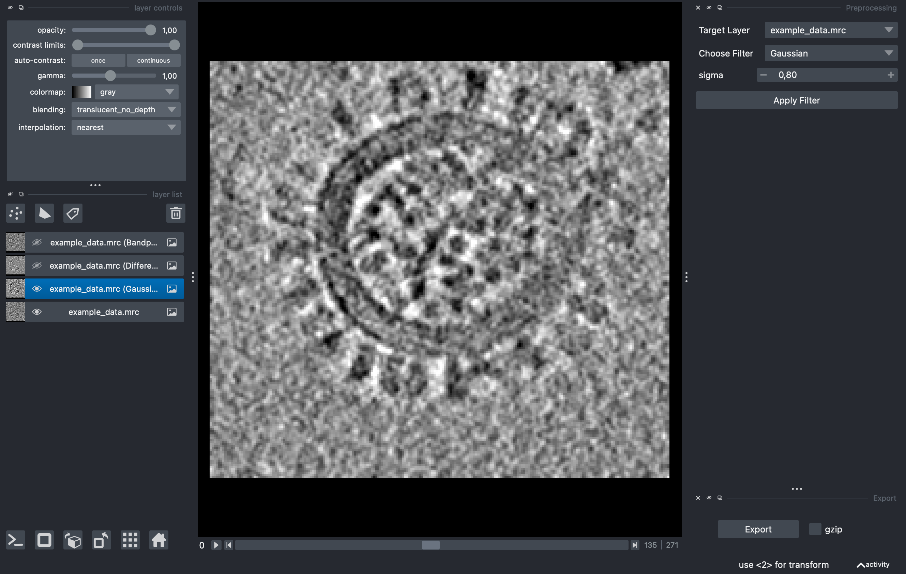

Preprocessing#
This guide covers how to set up the preprocessing GUI environment, use its functionalities, and prepare data for batch preprocessing.
Starting the GUI:
preprocessor_gui.py
This will launch a napari viewer embedded with custom widgets for preprocessing. For a detailed description of all GUI elements please have a look at the napari documentation.
Data Import:
Simply drag and drop your data in CCP4/MRC format into napari.
Filter Application:
The Preprocessing dock element allows you to select a filter target and a filter type via two separate dropdown menus.

Selecting a filter from the dropdown menu brings up its parameters. Clicking the apply filter button will filter the image and create a new layer on the left hand side, one for each filter type.

Data Export:
After selecting an adequate filter and parameter set the filtered data can be exported via the export button. Pressing the export button will open a separate window to determine the save location. If you applied a filter to the data, napari will also create a yaml file that contains the utilized parameters. This yaml file can be used to apply the selected parameters to other data like so:
preprocess.py \ -i file.mrc \ -y exported_yaml.yml \ -o file_processed.mrc
{kind=link}
{kind=link}
Note
Napari sometimes exits with a bus_error on MacOS systems. Usually its sufficient to reinstall napari and its dependencies, especially pyqt.
Conclusion#
Following this tutorial you have learned how to set up and utilize a preprocessing GUI powered by napari. This tool allows you to apply various preprocessing methods to electron density maps and view the results in real-time. With the export functionality, you can efficiently scale up and batch-process files using the preprocess.py script.